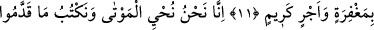

BİZ,
HER ŞEYİ BİR KİTAPTA
YAZMIŞIZDIR
8. Biz, onların boyunlarına halkalar geçirdik. O halkalar çenelere kadar
dayanmaktadır. Bu yüzden kafaları yukarı kalkıktır.
9. Önlerinden bir set ve arkalarından bir set çektik de onları kapattık, artık
göremezler.
10. Onları uyarsan da uyarmasan da onlar için birdir, inanmazlar.
11. Sen ancak zikre (Kur’an’a) uyan ve görmeden Rahmân’dan korkan kimseyi
uyarabilirsin. İşte böylesini, bir mağfiret ve güzel bir mükâfatla müjdele.
12. Şüphesiz ölüleri ancak biz diriltiriz. Onların yaptıkları her işi, bıraktıkları her
izi yazarız. Biz, her şeyi apaçık bir kitapta (levh-i mahfuz’da) sayıp yazmışızdır.
“Biz,” kahır ve celalimizin gereği olarak “onların” Mekke halkının çoğunun
“boyunlarına” büyük ve ağır “halkalar geçirdik.” veya yarattık. “O halkalar çenelere
kadar dayanmaktadır. Bu yüzden kafaları yukarı kalkıktır.” Ve gözleri aşağı
çevrilmiştir.
“__WORD__ kelimesi “__WORD__” kelimesinin çoğuludur. O ise azap ve işkence için demirden veya
başka bir şeyden yapılan, kendisiyle elin boyuna bağlandığı bukağıdır. Kuhistânî: “__WORD__
eli boyuna bağlayıp başın hareket etmesine mâni olan demir halkadır.” der. el-
Müfredât’ta ise şöyle der: “__WORD__ kelimesinin asıl anlamı, bir şeye zırh giydirmek ve onu
ortalamaktır. Ağaçların arasından akan suya “__WORD__ denilmesi buradandır. “__WORD__ kelimesi
ise kendisiyle bağlanılarak organları ortasına alan şey için kullanılır. Cimri kimseye “__WORD__ (O eli bağlıdır/kelepçelidir)” denir. Allah Teâlâ şöyle buyurur: “Yahûdîler,
Allah’ın eli bağlıdır (sıkıdır), dediler. Hay elleri bağlanasıcalar!” (el-Mâide, 5/64)
“__WORD__ kelimesi “__WORD__ kelimesinin çoğuludur. Çeneler demektir. Yani bu halkalar